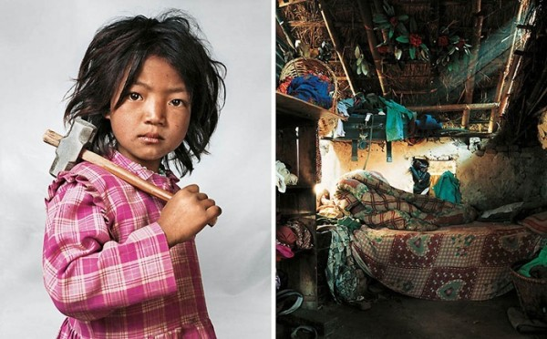

Фотограф Джеймс Моллисон родился в 1973 году в Кении, но вырос и увлёкся фотографией уже в Англии. Джеймс много путешествовал по всему миру и во всех странах, где ему доводилось бывать обязательно напрашивался сфотографировать детскую спальню.
Эти фотографии затем были изданы книгой с говорящим заголовком — «Где дети спят». Каждая пара фотографий в книге снабжена небольшим рассказом о самом ребенке. Как мы видим различия между детьми и их спальнями могут быть очень сильными.
«Я побывал везде где только мог, и многие мои фотографии стали результатом совсем неожиданных встреч» — говорит Молллисон. «Надеюсь, что запечатлённые мной образы помогут другим детям, помочь задуматься о неравенстве во всем мире»
12-летний Ламин живет в Сенегале. Он учится в школе деревни Кораник. В этой школе не учат девочек. Ламин делит комнату с несколькими другими мальчиками. Кровати представляют собой настил из досок установленных на кирпичах. В шесть часов утра, мальчики начинают работать на школьной ферме. Таким образом они учатся копать, собирать урожай кукурузы и пахать поля, используя ослов. Во второй половине дня дети изучают Коран. В свободное время Ламин любит играть в футбол со своими друзьями.
Цвика живет в многоэтажном доме в Бейтар-Иллит. Это израильское поселение на Западном берегу. Бейтар-Иллит — закрытое поселение состоящее из 36000 ортодоксальный евреев. Телевизоры и газеты запрещены. Средняя семья имеет девять детей, но у Цвики пока только одна сестра и два брата, с которым он разделяет свою комнату. До школы, находящейся в 2 минутах езды, Цвику возят на машине. Спорт запрещен учебной программы. Каждый день Цвика посещает библиотеку где любит читать Священное Писание. На компьютере у Цвики только религиозные игры. Когда он вырастет хочет стать раввином, и его любимая еда шницель и чипсы.
Джейми живет с родителями и младшим братом-близнецом и сестрой в пентхаусе на 5-й Авеню в Нью-Йорк. Джейми ходит в престижную школу и хорошо учится. В свое свободное время занимается дзюдо и плаванием. Изучает финансы. Когда вырастет хочет стать юристом, как его отец.

Индира живет с родителями, братом и сестрой в Катманду в Непале. В её доме только одна комнату, с одной кроватью, и один матрас. Перед сном детям кладут матрас на пол. Индира работает в местном гранитном карьере с 3 лет. Семья очень бедна, поэтому каждый должен работать. Кроме неё еще около других детей работает в этом карьере. Индира работает по шесть часов в день, а после работы помогает матери по хозяйству. Иногда она посещает школу, которая находится в 30 минутых ходьбы от их жилища. Ее любимая еда— лапша. Она очень хочет стать танцовщицей, когда вырастет.
Кая живет вместе со своими родителями в маленькой квартире в Токио, Япония. Ее спальня от пола до потолка заставлена шкафчиками с одеждой и куклами. Мать Каи сама шьёт дочери платья. У Каи около 30 платьев и пальто, 30 пар обуви и огромное количество париков. Правда когда Кая идёт в школу, то вынуждена одевать школьную форму. Ее любимая еда: мясо, картофель, клубника и персики. Она хочет стать карикатуристом, когда вырастет.
Доха живет со своими родителями и 11 братьями и сестрами в лагере палестинских беженцев в Хевроне, на Западном берегу. Ей приходится делить комнату с пятью сестрами. Девочка ходит в школу, находящуюся в 10-минутах ходьбы от дома и хочет стать педиатром, когда вырастет. Ее брат, Мухаммед, подорвал себя вместе с 23 мирными жителями, совершив теракт против израильтян в 1996 году. После этого израильские военные уничтожили семью брата. Плакат с его изображением до сих пор висит на стене в комнате девочек.
Жасмин живет в большом доме в штате Кентукки, США, с родителями и тремя братьями. Ее дом находится в сельской местности, в окружении сельскохозяйственных угодий. Её комната буквально набита коронами и поясами, которые Жасмин выиграла в различных конкурсах красоты. Всего она приняла участие более чем в 100 таких конкурсов. Всё свободное время у неё занимают репетиции. Джэсси хотела бы быть рок-звездой, когда вырастет.
Дом для этого мальчика и его семьи — матрас в поле на окраине Рима, Италия. Семья приехала из Румынии на автобусе, заняв деньги на билеты. По приезду они разбили лагерь на частной земле, но полиция прогнала их. У них нет документов, удостоверяющих личность, поэтому они не могут получить легальную работу.Родители мальчика моют лобовые стёкла автомобилей на светофорах. Никто из его семьи никогда не был в школе.
Донг живёт в провинции Юньнань на юго-западе Китая с родителями, сестрой и дедушкой. Он делит комнату с сестрой и родителями. У семьи есть свой участок земли для выращивания риса и сахарного тростника. Школа Донга в 20 минутах ходьбы от дома. Он любит писать и петь. Обычно вечером он в течение часа выполняет свою домашнюю работу, а потом тоже час смотрит телевизор. Когда подрастет, Донг хочет стать полицейским.
Роти живет на окраине Пномпеня, Камбоджа. Его «дом» расположен на огромной свалке, а матрас мальчика сделан из старых шин. Пять тысяч человек живут и работают здесь. В шесть часов каждое утро Роти и сотни других детей идут принимать душ в местном благотворительном центре. Потом дети идут на работу — очищают банки и пластиковые бутылки, которые затем продают в компанию занимающуюся переработкой вторсырья . Завтрак — часто единственный за день приём пищи.
Таис живет со своими родителями и сестрой на третьем этаже жилого дома в Рио-де-Жанейро, Бразилия. У них одна на двоих с сестрой спальня. Таис — поклонница поп-певца Филипа Дилона. На стене её спальни плакаты с его изображением. Когда вырастет хочет стать моделью.
Нантио является членом племени Рендилл в северной части Кении. У неё два брата и две сестры. Ее дом палатка из шкур скота. В чентре палатки место для костра, на котором готовят еду и вокруг которого спит вся семья. Нантио ухаживает за козами, рубит дрова и ходит за водой. Она ходила в сельскую школу несколько лет, но решила прекратить обучение. Нантио мечтает о том, что Моран (воин) выберет её в жёны. У нее сейчас уже есть парень сейчас, но в племени не считают плохим если женщина до брака вступала в связь с несколькими парнями. Перед браком она должна будет по обычаю пройти процедуру женского обрезания.
Джо живёт в Кентукки, США, с родителями и старшей сестрой. Он регулярно ходит вместе с отцом на охоту. У него лично есть два ружья и арбалета, а первой его добычей стал олень, которого Джо застрелил в возрасте семи лет. В следующем охотничьем сезоне Джо собирается использовать только арбалет, так как стрелять из ружья ему уже неинтересно. Надеется продолжать охотиться когда вырастет. В его семье всегда съедают мясо убитых животных. Джо уверен, что животное нельзя убивать ради спортивного интереса. Когда Джо не на охоте, то любит смотреть телевизор и играть со своим любимцем бородатой ящерицей Лили.
[poll id="12"]